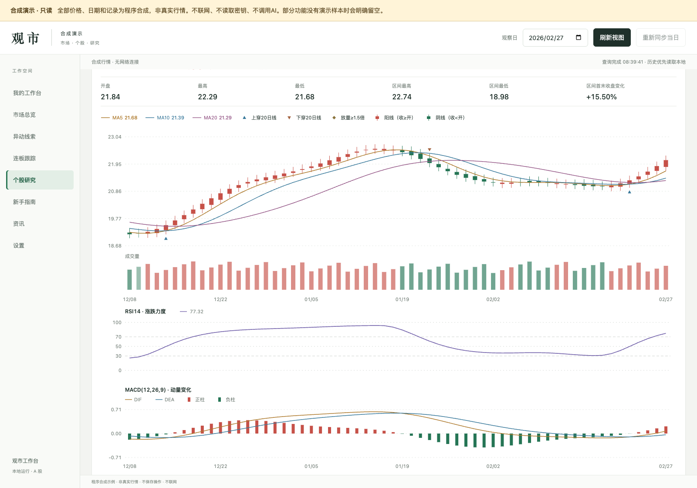
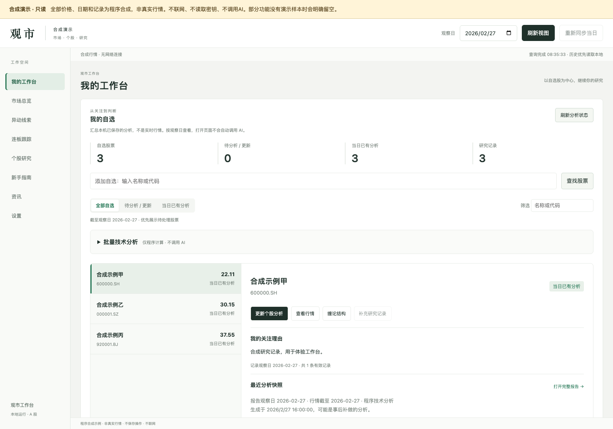
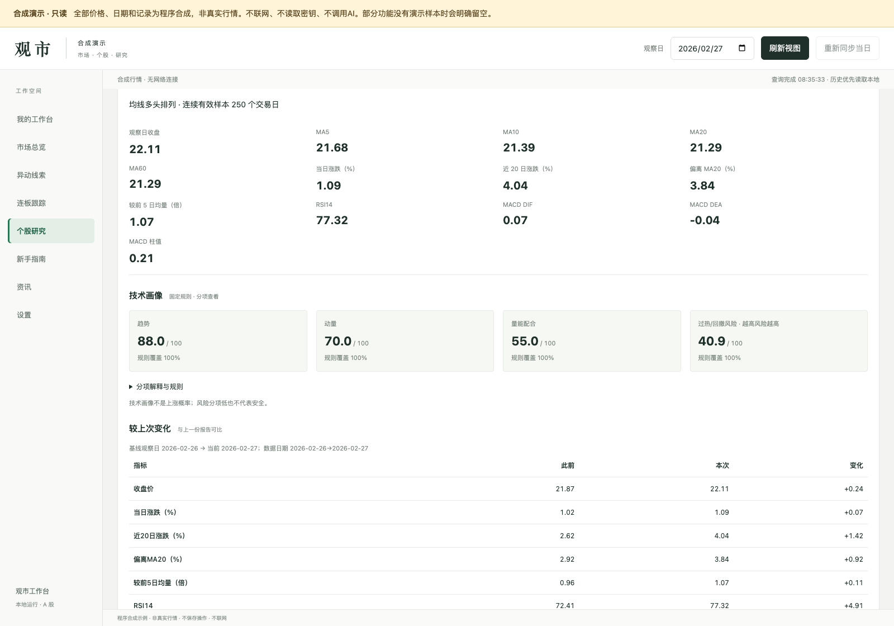
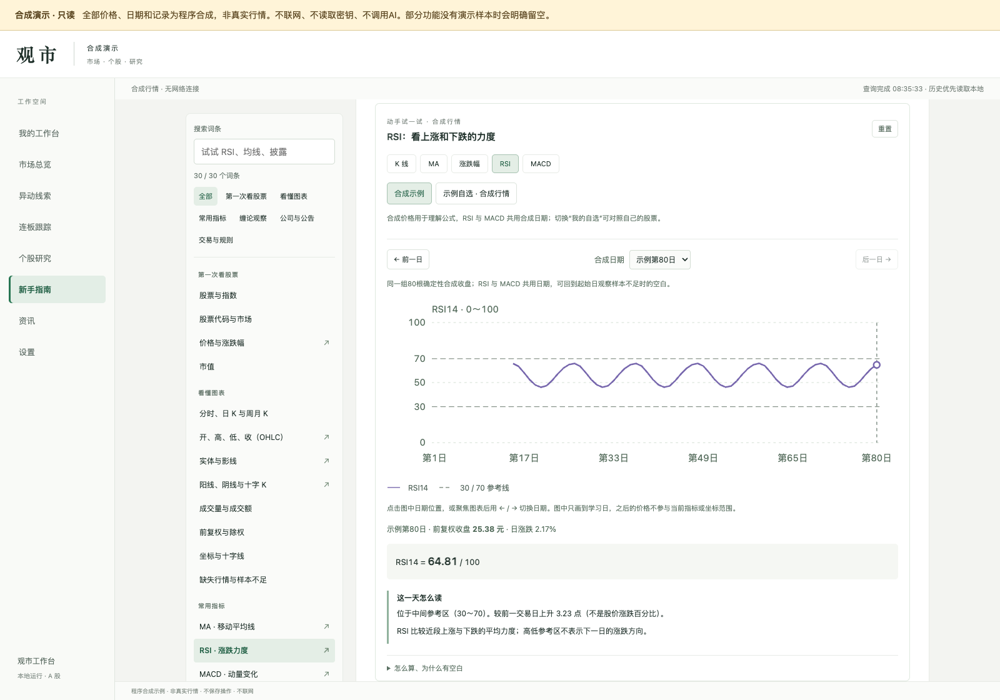

从自选开始
管理关注列表、留下研究理由、打开已有报告。批量技术分析需要时再展开。
工作台 · 研究记录 · 技术报告CandleAtlas · 观市，把自选、技术指标与复盘记录放在一起。
先看清发生了什么，再记下自己的判断依据。

合成演示可以浏览图表、样例报告和教学交互，不连接外部数据源。
配置数据源后添加自选，把关注理由、技术报告和历史变化留在本机。
先把正在使用的版本开放出来，欢迎用真实的使用体验推动它变好。
不必先搭一套复杂的研究系统。先把看图、理解指标和记录理由连接起来。
管理关注列表、留下研究理由、打开已有报告。批量技术分析需要时再展开。
工作台 · 研究记录 · 技术报告均线、量价标记、RSI 和 MACD 放在同一个日期脉络中看，配好图例与通俗解释。
日 / 周 / 月 K · 指标与图例查看分项技术画像，对照上次报告。方法或窗口不一致时，明确标出比较限制。
趋势 · 动量 · 量能 · 风险30 个常用词条、5 类交互图解。试着切换日期，也能配置后对照自己的行情。
K 线 · 均线 · 涨跌幅 · RSI · MACD以下全部来自当前应用。为保护个人资料，展示使用统一的合成样例。
自选、关注理由和已有报告集中在一个位置。再打开时，先看上一次留下了什么。

趋势、动量、量能配合和风险分别展示。不可比的结果保留限制，不硬给方向。
这些是固定规则的描述，不是上涨概率或收益承诺。

从合成示例开始，切换日期，看数值怎样变化。配置数据源后，也可以对照自己的自选股学习。

准备 Python 3.11 或更新版本，下载并解压源码，进入项目目录。运行应用不需要安装第三方 Python 包或前端依赖。
当前未提供公开托管的在线分析服务。这个介绍页用于看功能和使用方式，运行应用需要在本机启动。
python3 server.py --demo --port 8765然后在浏览器打开
http://127.0.0.1:8765
如端口已被使用，可更换端口。macOS 也可双击“启动演示.command”。
正常模式需自行配置行情数据 Key；AI 解读另行配置，且仅在手动触发时调用。服务商可能收取费用。
真实历史线索与披露资料依赖对应日期的采集和核验。缺失会明确提示，不用最新数据冒充历史结果。
缠论候选仍属实验功能，默认关闭并标注“未确认”。当前在 macOS 验证，Windows 欢迎补充使用反馈。
告诉我哪个流程卡住了，哪段解释看不懂，或哪个数据结果值得核对。
如果想贡献代码，从一个可复现的小问题和一个小 PR 开始。
提交反馈前请遮去 Key、个人记录和私人数据。